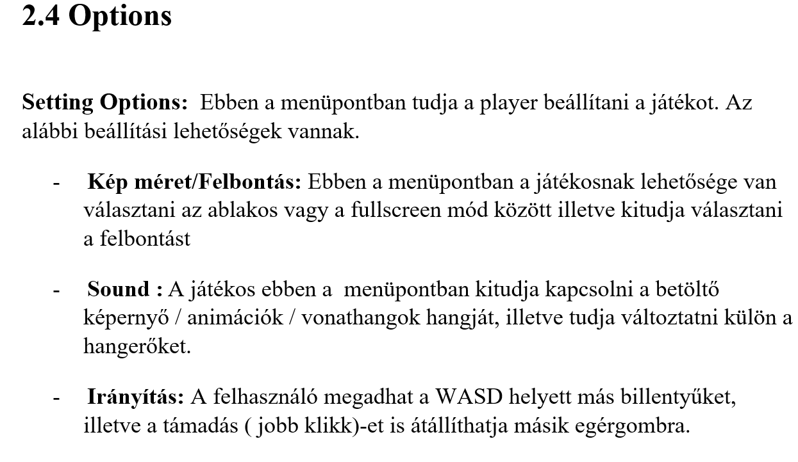

Csapatnév: Randomok
Feladat címe: Vonat menedzselős jaték
Rendszer tervezés
Gyakorlatvezető::
Mileff Péter
Csoport tagok:
|
Nagy Bence |
FVIQLY |
nbence0620@gmail.com |
|
István Kaló |
T59MGG |
- |
|
Dániel Vitkolczi |
XPGMCH |
vitkolczi.daniel@gmail.com |
|
Bence Varga |
CKFEC9 |
- |
|
Petró Balázs |
FO71M2 |
petro.balazs94@gmail.com |
2022.11.23
Dokumentum címe: RENDSZERTERVEZéS
Történet
|
Dátum |
Verzió |
Leírás |
Szerző |
|
2022. 11. 23 |
1.0 |
Kész verzió |
teljes csapat |
|
2022. 11. 23 |
1.0 |
HTML SZERKESZTÉSE |
Petró Balázs |
A dokumentumok formátumára vonatkozó általános előírások betartása kötelező.
Ez a dokumentum minta kevésbé formális, mint az előzőek, mert ebben a munkafázisban a feladat jellege és a csoportok munkamódszere már jelentősen befolyásolja a célszerű dokumentum formát.
A vonal után kezdődik a dokumentum minta
Tartalomjegyzék
3.1. Adatbázis kezelő kiválasztása
4. A funkcionális modell kiegészítése
Vonatos játékunk célja, hogy menedzsmenttel teljesítsünk küldetéseket adott pályákon. A felhasználó kedve szerint csinálhat egy vonat vállalkozást.
Ebben a fejezetben az általunk tervezett felhasználói felület kerül bemutatásra. A tervezés fő szempontjai között szerepelt az átláthatóság, könnyű kezelhetőség. A felhasználói felület fő csapáspontjai már mindenki által jól ismert és használt programok alapján készültek, így nem igényel különösebb nehézséget a kezelése.

Microsoft Azurt fogjuk használni.